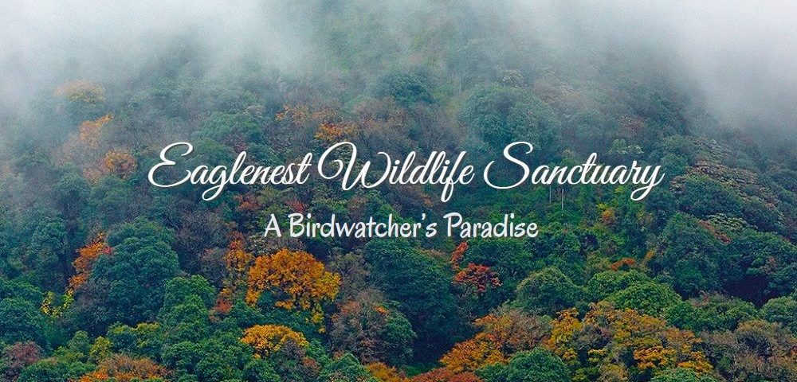
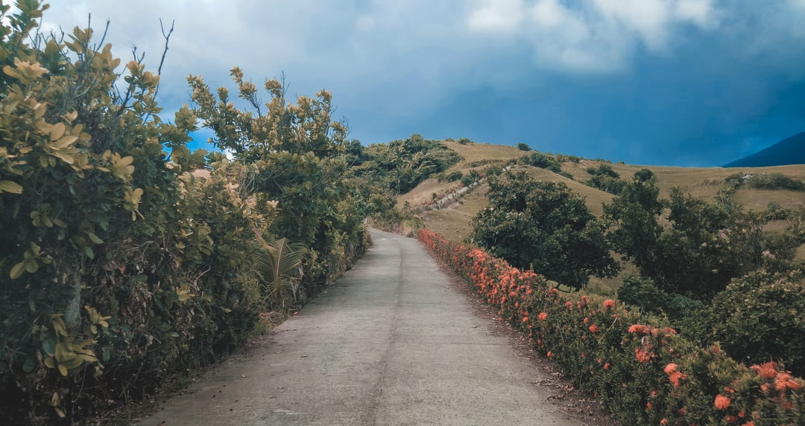
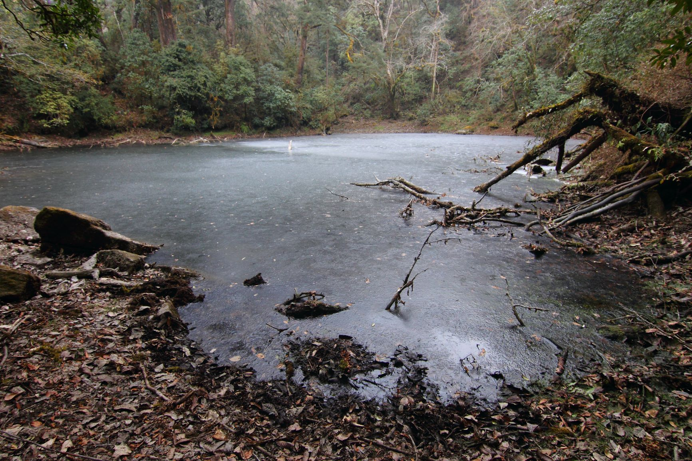
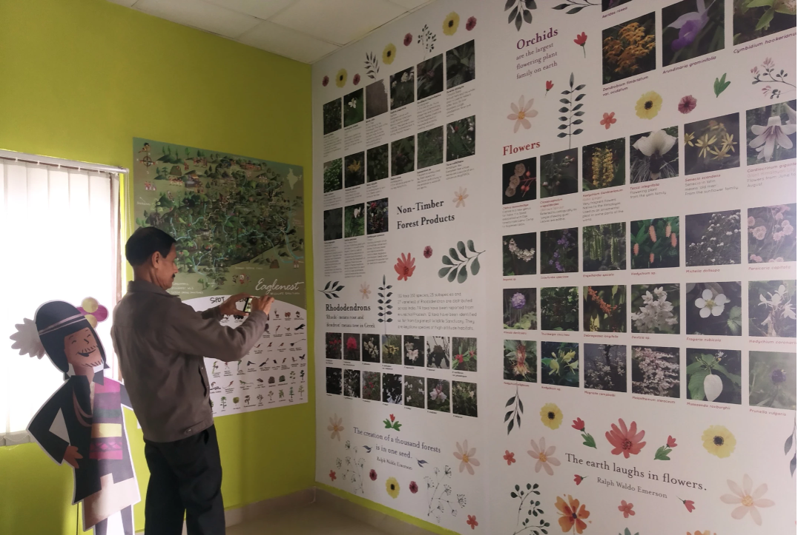
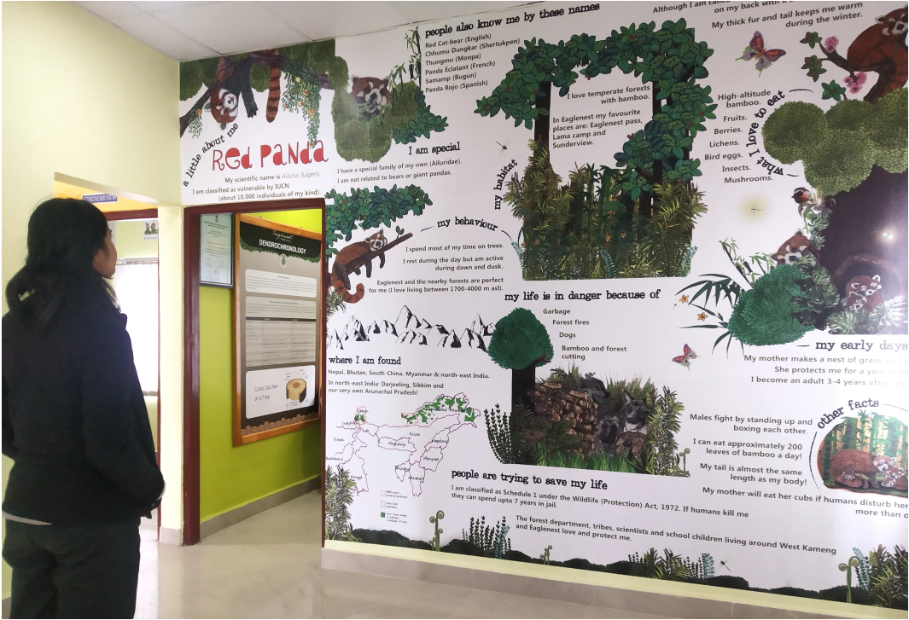

A little surprise this time was – my dad joined me for the trek. There’s nothing more exciting and satisfying to go for a trek with dad and that too into the jungles! My senior citizen dad, now in his early 70’s is always busy doing this - and - that at home. He cannot sit calm for a few minutes either - always multitasking! This trek was a perfect break from his usual schedule. My sister joined too – the more the merrier! Well, she always says that her luck never forbids her for any tour with the family either due to academic schedule or due to some other circumstances – but not this time.

After all negotiations, we planned to go to a forest located in the Himalayan foothills of West Kameng district of Arunachal Pradesh – Singchung Bugun Village Community Reserve (SBVCR) bordering the famous Eaglenest Wildlife Sanctuary. What’s unique about this Reserve is that it covers an area of approximately 40 square kilometers totally managed and protected by ten youths of the indigenous Bugun community of Singchung Village. It’s named after critically endangered Bugun liocichla (Liocichla bugunorum), the first bird species to be discovered in India post-Independence in 2006.
So, we headed from Tezpur towards West Kameng through the lush green tea gardens of Mazbat near Orang. After traveling for around 55 kms, we reached Balemu Check-post where the permits were checked. (To enter Arunachal Pradesh, one must ensure to get the Inner Line Permit (e-ILP) issued. This is easily available in www.arunachalilp.com) As we were moving upwards through the fog-covered curvy roads, we could breathe the cleaner air and felt like gulping more and more fresh air as we escaped the urban atmosphere. What’s more worthy of mentioning here is the availability of clean washrooms along the way after every certain kilometer. I am pretty sure many of us must have faced this problem while traveling. But trust me – it won’t be a problem while traveling to Arunachal Pradesh. (I am not sure if it’s the same through Bhalukpong route.)
Moving for another 80kms we reached Shergaon – Incredible Shergaon! It’s a beautiful village inhabited by the Sherdukpen community. Far at the hills, it was a beauty to see the Rhododendrons in full bloom. The apple and kiwi orchards are a must-visit in their seasonal time. Not to forget the calmness of the place with a river flowing beside the road. One can trek through the Choskorong forest and a beautiful waterfall awaits there – a local youth informed us as we stopped for a while to cherish the beauty of the place. I haven’t visited the forest yet but it’s the next destination in my trekking list. Further en route to Tenga Valley we offered our prayers at the famous Chillipam Monastery in Rupa. After driving uphill for approximately 170kms in total, we finally reached Tenga Ledge. It was already starting to get dark as the sun set far behind the mountains.

Tenga Ledge point at Tenga Valley. Photo: Shaleena Phinya
From here it’s around 30kms to Eaglenest Wildlife Sanctuary. Moving upwards through the dense fog towards our destination, we halted midway at Lama Camp for the night. As we got down from the vehicle, it was around 7 in the evening. The chilly wind blew us away. Having stood at an elevation of ~2400 meters above sea level we moved to the fireplace inside the kitchen as we were all shivering like anything. At this point in time, a cup of hot ‘Chai’ is what all we needed, and the camp staff was quick to do that. Sipping through the hot chai a lively conversation followed with them. It felt really great far in the mountains away from city life. Gradually as the clock ticked, it was time for dinner after which a good sleep was much needed to wake up energized for the morning trek.
At the break of dawn, the chirping birds and majestic panoramic view greeted us with the rising sun and it was just s-p-e-c-t-a-c-u-l-a-r! Just as we wanted our morning to start. Perfect! My sister was quick enough to grab the binoculars to look around for birds. She and dad are nowadays quite curious to look through the binoculars to spot birds or anything interesting. If they happen to see any bird they keep describing me in their best possible way which sometimes turns out to be very funny, though I keep sharing the basics with them. I could only look at them being happy and soulful.

For a quick warm-up, we explored the nearby areas of Lama Camp along with one of the camp staff. This place holds a mixed flock of birds in the areas around and it’s a birding paradise. The last time I visited this place, I was lucky enough to have encountered an Eastern Trinket Snake (non-venomous) right next to the camp as it crossed the road to move to the forest. Well, while we are in the jungles, we should always move cautiously and respect the environment.

After our warm-up trek, we had our breakfast and headed to the place where we actually planned. Just as we got on our vehicle, I heard someone call my name from far. I turned around to find Nima uncle (local inhabitant) approaching us. He invited us to his place in the evening to celebrate 'Losar' together. 'Losar' is a popular festival of Arunachal Pradesh which marks the first day of the lunar calendar and the start of spring. ‘Lo’ meaning year and ‘Sar’ meaning new. The festival is observed to ward off evil spirits and welcome the New Year to be filled with happiness and prosperity. Accepting his warm invitation and delighted at the same, we continued to move upwards till we could see a board that read “Tragopanda Lake – Buxa Cutting Nature Trail: A serene experience through moss-laden Rhododendron-Oak forest.” Doesn’t it sound pleasing and refreshing after reading this? Well, we felt the same. We got down from the vehicle and took a deep breath cherishing the beauty of the place as the moving fog engulfed us quickly. As the fog cleared and we started to follow the trail, the birds welcomed us with their euphonious calls. We kept our pace very slow as we moved ahead keeping in mind the changing elevation for my Dad and sister. The trail led us through the moss-laden temperate broad-leaved forest with an understorey of Bamboo and blooming Rhododendrons. Illicium griffithii or Star Anise used as a spice is also found here.

Maple-leaf laden forest floor at the Nature Trail.
The fallen maple leaves added beauty to the trail as the sun rays peeped through the dense forest. My Dad couldn’t stop clicking photographs of everything he could observe in nature, except for birds as they could only be heard in the dense upperstorey. He was so energetic that he kept moving ahead and we were left far behind. By the time I and my sister reached Tragopanda Lake, my dad was already there clicking photographs from every angle he could, sitting by the lake. This lake is in the Bugun Community Forest. By this time we were at an elevation of 2650m above sea level.

Rhododendrons by the Tragopanda Lake.
About a kilometer from this lake is the traditional boundary between the community lands of Bugun and Sherdukpen tribes. Between 1992 and 1996, this trail was a busy logging road with trucks carrying logs down to the road. Nearby the lake, there’s a beautifully constructed tree-house. I sat behind looking at both my co-trekkers climbing up to the top and felt like Dad recollected his childhood memories. We sat alert inside the treehouse for some time hoping to spot for any likely species. The sighting possibilities at this point are the Ward’s Trogon, Temminck’s Tragopan among others.

Tree house near Tragopanda Lake..
After spending some time there, we headed back the same route with big smiles of contentment on our face to reach the camp. On reaching, we found that the camp staff has already lit up the fireplace for us as the chilly wind blew outside. Getting warmed up and tummies ready to be re-filled, I and my sister listened to my Dad as he shared 'his' experience while he was posted at Arunachal Pradesh years back for official purpose. With our minds refreshed and hearts filled with gratification, it was gradually time to take leave from this gem of nature. On our way back, we visited the Nature Interpretation Centre (NIC).
Nature Interpretation Centre (NIC) at Ramalingam. Photo: Shaleena Phinya
The NIC is an interactive encyclopedic of the Eaglenest Wildlife Sanctuary. It is open for all and anyone visiting the sanctuary should not miss this. 
The joint effort by Shergaon Forest Division, Millo Tasser Sir, the research team, and the local inhabitants in managing Eaglenest and the community reserve forest is laudable. A big thank you to Nima uncle and the camp staff for providing such a pleasant and homely ambiance. Also, more power to SBVCR staff as they patrol the forest amidst all odds. The beauty of this place is best when only experienced on own. Long live Eaglenest!